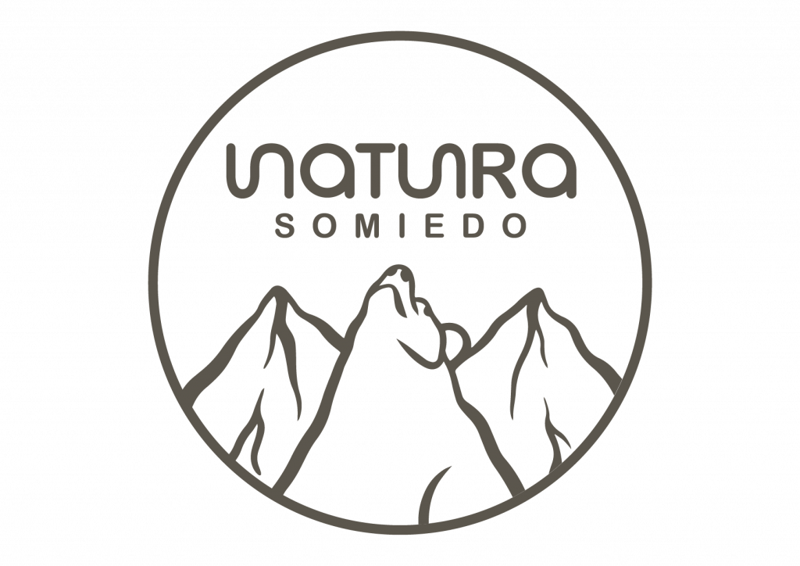
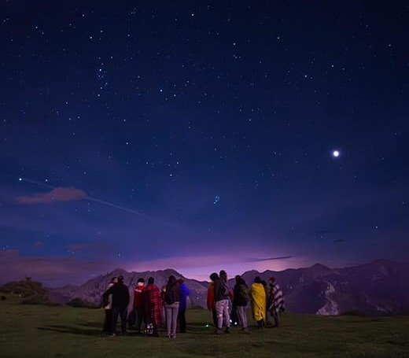
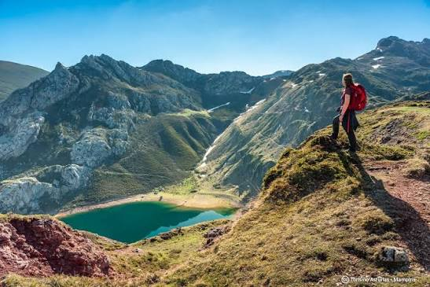

Asociación de astronomía · Reserva Starlight de Somiedo, Asturias

El club nació el 14 de marzo de 2012 por iniciativa de un grup de vecinos del valle del Lago que ya subía al mirador con sus propios prismáticos.
"De mirar las estrellas con prismáticos a tener un club con más de 300 socios"
Marta Vega, coordinadora general
Esta es la plantilla del club, con formación oficial en sus respectivas especialidades

EQUIPO DESTACADO
Marta Vega
Coordinadora general · desde 2012
Lidera el equipo técnico y de voluntariado, y supervisa cada observación nocturna del club
Álvaro Fanjul
Astrofotógrafo · 2015
Nuria Braña
Monitora · 2017
Pablo Riestra
Técnico · 2018
Carla Menéndez
Divulgación · 2020
Iván Cangas
Senderos · 2021
Juan González
Técnico · 2020